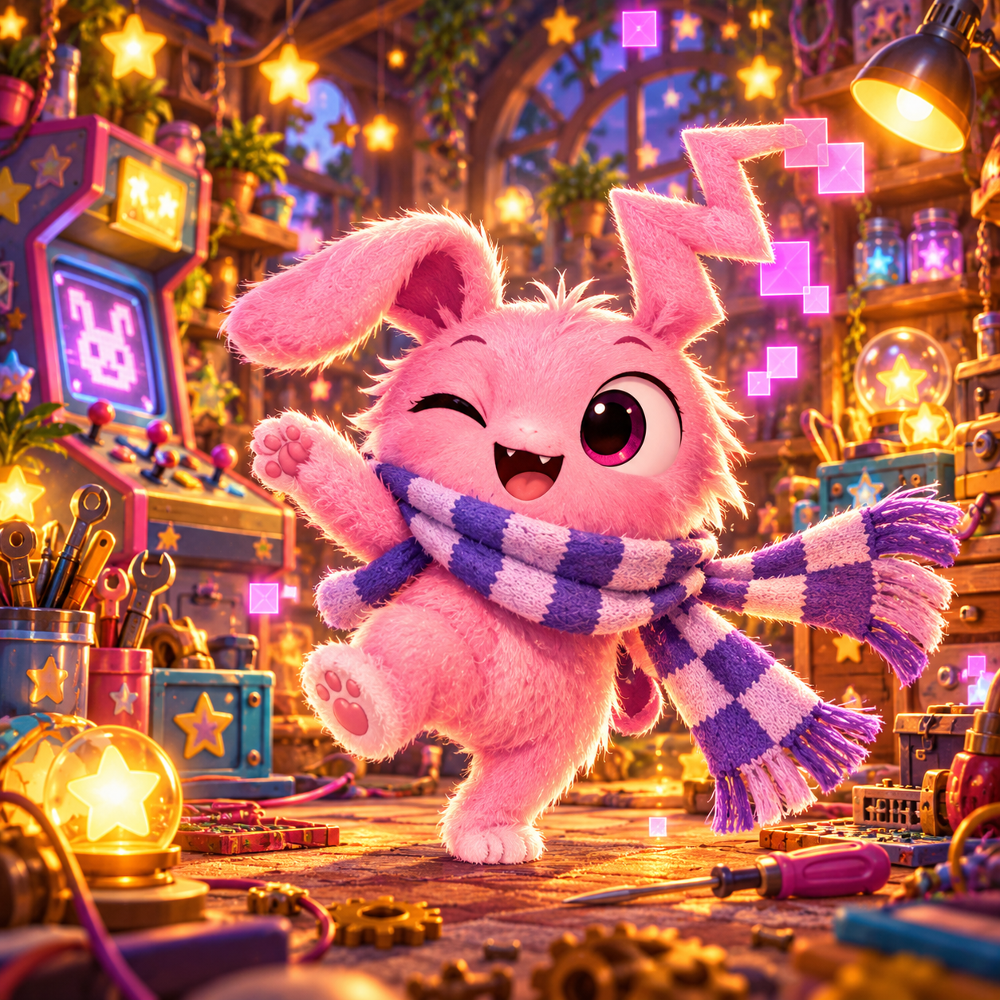

What will your light discover?
Lumo has found a gate made of stars. Pick a strategy, bring your curiosity, and explore together.
Read, imagine, choose—or just listen to the story.

Wonder together
One question. A few possible paths. Room to think.
Quiet is welcome
Every activity is optional. There is always room for a break.
Carry a discovery
Tell someone what you noticed, or bring another question tomorrow.
Choose a little adventure
Proposed library layout. The complete authored storybook is available below.
The Constellation Gate
Four constellations. One locked door. Which strategy will you try?
LUMO · THE CONSTELLATION GATE · PREVIEW
A gate made of stars
Lumo swept his red quiff away from his eyes. His Questlight scattered ruby-gold stars over a locked gate.
“Captain's log: extremely dramatic door. Suspiciously ordinary maths.”
Four constellations hung overhead. Each held six stars. How many altogether?
Choose your strategy
A little hint, if you want one
Imagine one group first, then another. You can draw the stars instead of counting aloud.
This short preview is authored. It does not use AI or save answers.
Continue in the complete storybookMeet your crew
Five personalities. Five Heartlights. Plenty of room to be yourself.
Lumo
Questlight · co-op captain

Luna
Dreamlight · story explorer

Sprout
Traillight · puzzle scout

Nori
Tidelight · quiet wonder

Moki
Sparklight · playful discoveries
Planned personalisation: choose favourite topics and reading pace. No preferences are collected in this design reference.
Your discoveries can start small
No saved discoveries yet
In the planned app, you can choose to keep a discovery after an adventure. You can change or remove it later.
This reference does not implement storage or completion tracking.
A clear view for grown-ups
Proposed adult-area structure. These panels explain the intended controls; they do not configure a live app.
Profiles and device-local storage
Anonymous samples first. Optional local profiles for resume and settings. Show the active profile and explain shared-device limitations.
What your Lumming remembers
Planned inspect, approve, edit and delete controls for explicit preferences. No sensitive trait inference or hidden affection score.
Reading, sound and motion
Planned text size, reduced motion and optional read-aloud. Text remains available; microphone access is not required.
Content and help
Show learning topics, adult participation notes, content version and a way to report a concern. Stories model support without promising grades, treatment or guaranteed safety.
Future AI conversation
Separate opt-in and architecture review before introduction. Authored adventures remain available without AI.